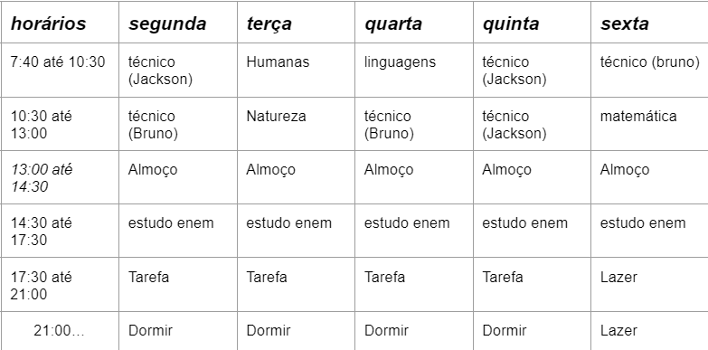

Quem sou eu?
Olá, me chamo João Miguel e tenho 17 anos, estou atualmente cursando o terceiro ano do ensino médio no SENAI. Sou uma pessoa com facilidade para me expressar publicamente e demonstrar minhas ideias. Me considero também muito leal a quem está sempre no meu lado, gosto de conversar debater ideias e principalmente buscar algo novo pra minha vida

Rotina de estudos
Rotina de estudos é um plano organizado e estruturado que estabelece quando, onde e como você vai se dedicar ao aprendizado e à preparação para seus estudos, exames ou objetivos acadêmicos. Ter uma rotina de estudos eficaz pode ajudar a maximizar a produtividade, melhorar a retenção de informações e reduzir o estresse.
Matemática
disciplina que estuda as propriedades e as relações dos números, das formas e dos objetos abstratos. Ela envolve conceitos como aritmética, álgebra, geometria, cálculo e estatística, e é usada para resolver problemas, fazer medições, modelar fenômenos naturais e artificiais, e muito mais.

Ciências Humanas
As ciências humanas, também conhecidas como ciências sociais, são um campo de estudo que se concentra na compreensão do comportamento humano, da sociedade e da cultura. Essas disciplinas buscam analisar e interpretar a experiência humana, as interações sociais e os fenômenos culturais.

Ciências da Natureza
As ciências da natureza são um conjunto de disciplinas que se concentram na compreensão dos fenômenos naturais, explorando os processos e as leis que governam o mundo natural. Essas disciplinas buscam explicar os eventos e as interações que ocorrem na natureza, muitas vezes com base em evidências empíricas.

Linguagens
As linguagens são sistemas complexos de comunicação que os seres humanos usam para expressar pensamentos, ideias, sentimentos e informações. Existem diversas formas de linguagem, cada uma com suas características e finalidades específicas.

Desenvolvimeto de Sistemas
O ensino técnico no nível do ensino médio combina uma educação geral com uma formação prática e específica em uma área técnica ou profissional. Durante o ensino médio, os alunos que optam por um programa de ensino técnico estudam matérias gerais semelhantes às dos programas regulares de ensino médio, como matemática, ciências, línguas e humanidades, mas também se concentram em disciplinas técnicas relacionadas à área de especialização escolhida.

Escolha do aluno
Atividades autorais e de escolha do aluno